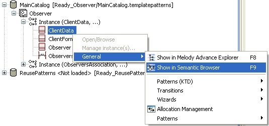
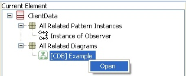

Model element representations
The root elements of each instance are represented below the instance.

The 'General' contextual menu provides access to features which are common to all model elements. Among them, navigation features allow showing the selected element in the Project Explorer or in the Semantic Browser (Capella only).
Recall that from the Semantic Browser, it is then possible to navigate to every diagram that represents the selected element ('All Related Diagrams' category), as in the figure below.
